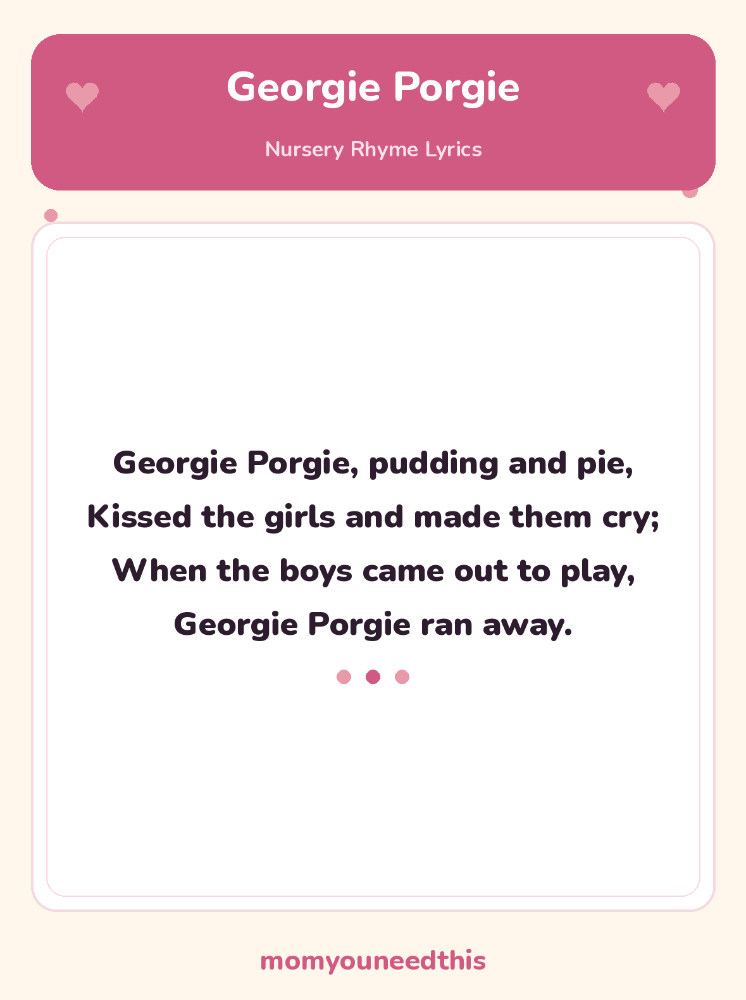

Georgie Porgie Pudding and Pie — Lyrics and a Free Printable
Georgie Porgie is the rhyme that usually starts a conversation: why did the girls cry, why did Georgie run away, and what should a kinder Georgie have done? The rhyme is short enough to sing twice, with the chat in between.
Last updated: October 25, 2026
Quick Answer
Georgie Porgie is a traditional nursery rhyme about a teasing boy who kisses the girls and makes them cry, then runs away when the boys come out to play. The full lyrics are on this page, and the same words are on the free printable lyrics sheet to print at home.
At a Glance
- Rhyme: Georgie Porgie
- Type: Story rhyme
- Best for: Ages 3–6
- Printable: 1 lyrics sheet
- Cost: Free — print at home
🎵 Georgie Porgie Lyrics
The full traditional rhyme — one short verse, sung on playgrounds for generations.
Georgie Porgie, pudding and pie,
Kissed the girls and made them cry;
When the boys came out to play,
Georgie Porgie ran away.

✂️ Download Your Free Georgie Porgie Lyrics Sheet
The full Georgie Porgie lyrics on one big, clear sheet — made for fridges and singing together.
⬇️ Download Free Lyrics Sheet 🖨️ Print🎁 Free printable for ages 3–6
🥧 About This Rhyme: A Playground Tease
Pudding and pie is simply a boy introduced by his favourite foods — in the world of this rhyme, Georgie is a treat-loving teaser. He kisses the girls (who did not ask to be kissed, the rhyme is clear, because it made them cry), and then, the moment the boys come out to play, the teaser runs away. That ending is why the rhyme has lasted: the bold boy is not so bold after all, and children relish it.
It is a genuinely useful rhyme for a gentle chat about teasing and feelings. The girls cry — how do we know Georgie’s game was not kind? Georgie runs away — would saying sorry have been braver? Nobody has to lecture; the little story raises the questions by itself, and preschoolers have strong opinions about all of them.
You may hear it said that Georgie was a real king or courtier. Those stories are guesses only — nobody knows for sure who Georgie was, if he was anyone at all, and the rhyme works just as well as a playground song about a teasing boy getting his comeuppance.
🖨️ How to Use This Rhyme
- Sing it with voices. A boastful voice for Georgie’s lines and a scampering, quieter voice for the last line — the run-away ending lands best whispered fast.
- Act the ending. Mime a kiss blown across the room, hands-on-hips huffs for the girls, then running-on-the-spot for Georgie. Movement fixes the word order in memory.
- Print the lyrics sheet. One page, big clear type, with the full rhyme — made for fridges, classroom walls and singing together.
- Let them “read” it back. Point along each line while you sing, then let your child lead. Retelling a rhyme in order is early reading in action.
🎵 More Nursery Rhymes & Fun
🎵 Nursery Rhymes
The full hub of classic nursery rhymes — lyrics and a free printable sheet for every rhyme. Browse all nursery rhymes.
🎶 Peter Peter Pumpkin Eater
The silly pumpkin-shell rhyme, with a tongue-twister first line and a free printable lyrics sheet. Read Peter Peter Pumpkin Eater.
🎶 Mary Mary Quite Contrary
The garden rhyme of silver bells and cockle shells, with the old garden words explained. Read Mary Mary Quite Contrary.
🎨 Free Coloring Pages
Hundreds of free coloring sheets to print for every age. See the coloring pages.
❓ Georgie Porgie FAQ
What are the lyrics to Georgie Porgie?
The full words are in the lyrics section near the top of this page — the complete four-line verse. The free printable sheet carries the same words for singing from paper.
What age is Georgie Porgie for?
It suits preschoolers, roughly ages 3 to 6. The rhyme is short and bouncy to sing, and its little story — a teaser who runs away — gives preschoolers a gentle first topic about teasing and feelings.
Can I print the lyrics sheet?
Yes — the lyrics sheet is free to print at home, with no signup. It is a single page carrying the full rhyme in big, clear type, made for fridges, nursery walls and singing together.
Was Georgie Porgie a real person?
Nobody knows for sure. The rhyme is sometimes said to be about a king or a courtier called George, but there is no solid evidence for any of those stories — they are guesses. What is certain is that children have sung about Georgie Porgie, pudding and pie for a very long time.